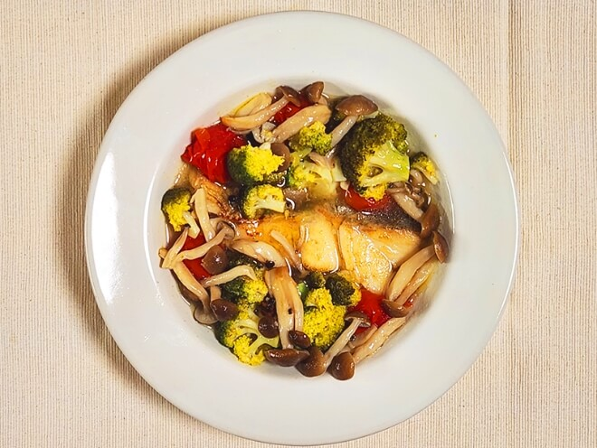
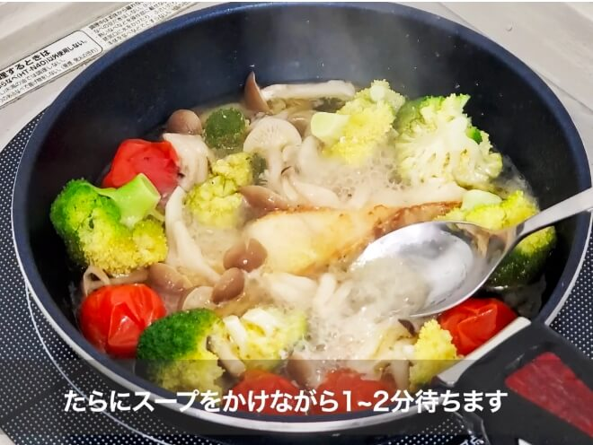

見た人を喜ばせる
2年生で行われる表現応用Bという授業でマニュアル動画の作成を行いました。
私はアクアパッツァというイタリア料理の動画を作ることにしました。普段作らないものの方が有益だと思ったからです。 動画を作成するにあたって、とにかく美味しそうに撮ることを目標にしました。
撮った動画を見た人に美味しそうだな、とか作ってみたいなと思ってもらいたかったからです。
美味しそうに撮るにはどうすればいいだろうと思った結果、照明が大事ではないかと感じました。そこで家にある照明に使えそうなものを組み合わせライトを作りました。 撮影では、ライトの方向やどういうカットがあれば良いかを考え、料理の良さを引き出しました。
そして、授業で一人ずつ映像を講評されたとき、友達から「美味しそうでお腹減った」と言われ、先生からは「美味しそうに撮れている」と言ってもらうことができました。